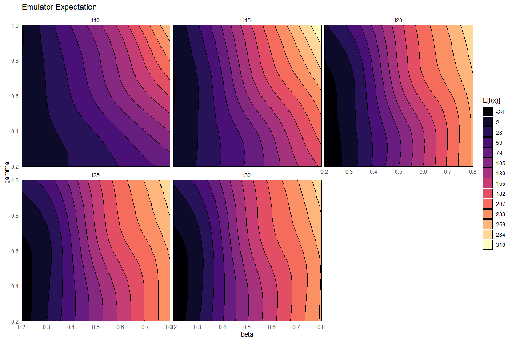
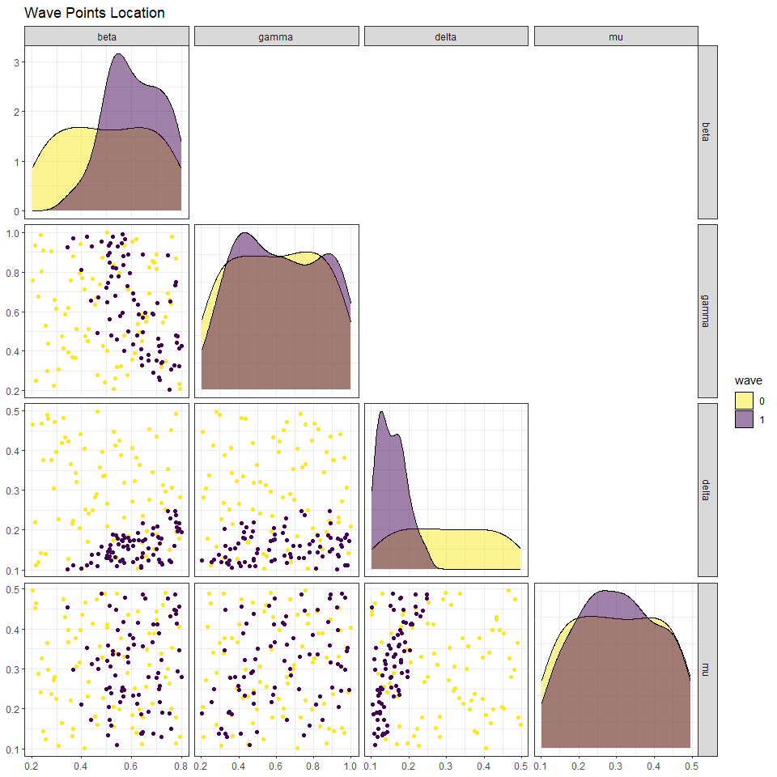
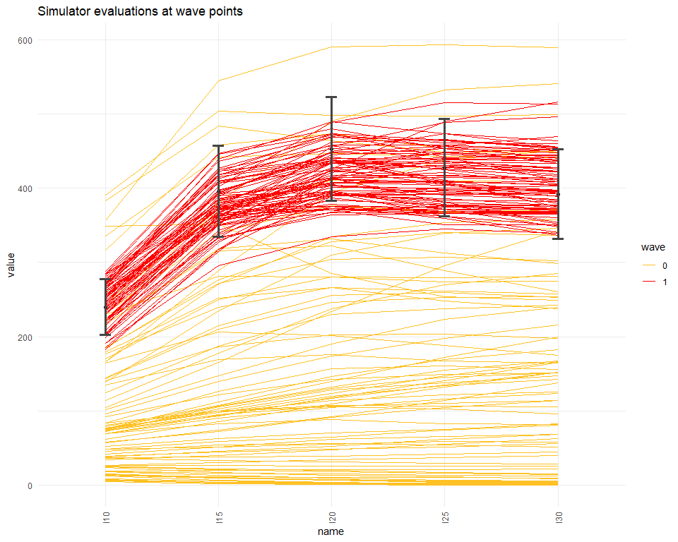
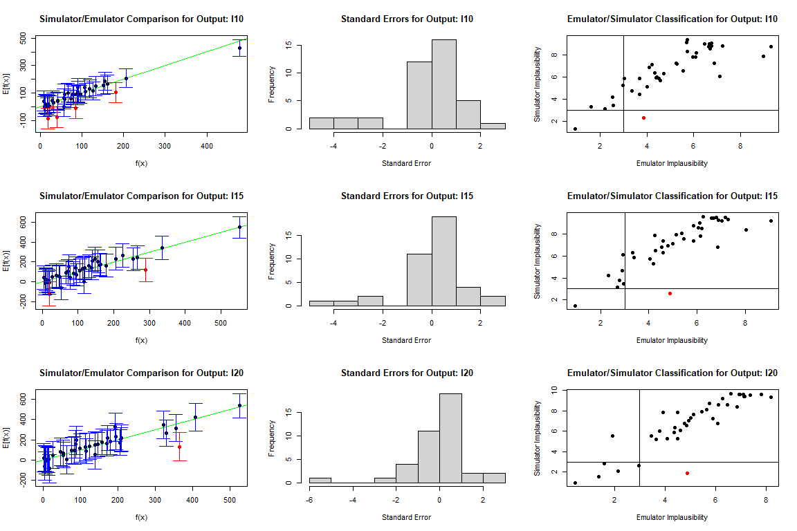

2 One-dimensional Example
To show how history matching and emulation work, we present an example with a one-dimensional emulator.
2.1 Setup
The model we consider is a single univariate deterministic function:
\(f(x) = 2x + 3x\sin\left(\frac{5\pi(x-0.1)}{0.4}\right).\)
Through this very simple example we demonstrate the main features of emulation and history matching over a couple of waves. Moreover, since \(f(x)\) can be evaluated quickly, we will be able to compare the emulator performance against the actual function very easily.
We will presume that we want to emulate this function over the input range \(x\in[0,0.6]\). To train an emulator to this function, we’ll evaluate \(f\) at equally spaced-out points along the parameter range: \(10\) points will be ample for training a one-dimensional emulator.
For demonstration purposes we put no point between \(0.5\) and \(0.6\) in data1d: we will comment on the effects of this choice at the end of the first wave. Note that the value of \(f\) is considered unknown for all values of \(x\) outside data1d. The points in data1d will be passed to the emulator package, in order for it to train an emulator to the function func, interpolate points between the data points above, and propose a new set of points for training a second-wave emulator.
2.2 Emulator Training
To train the emulator, we first define the ranges of the parameters. Note that we create a list of one element, which seems pointless here but generalises easily to multi-output emulation.
The emulatorr package adopts a Bayes Linear approach: it first builds a preliminary version of the emulator representing our prior knowledge and then trains the definitive emulator using the training data with Bayes Linear update formulae (see Appendix A for a brief introduction to Bayes Linear Emulation).
The preliminary version of the emulator is obtained though the function emulator_from_data, which requires at least three things: the training data data1d, the name(s) of the outputs to emulate, and the ranges of the input parameters ranges1d:
Note that an extra parameter has been provided to emulator_from_data: deltas = 0. This coefficient plays an important role in regularising covariance matrices in higher dimensions; since we are now working in one dimension, we set deltas to zero. An in-depth discussion of the \(\delta\) coefficient can be found in section 5.
We are now ready to update our preliminary emulator through the Bayes Linear update formulae. This is done by applying the adjust method to pre_em1d_1 (note that pre_em1d_1 is inside a list of length one, to allow for an easy generalisation to multi-output emulation):
This trained emulator takes into account the fact that we know the values at the 10 points in the dataset. Correspondingly, the variance at these ten points (which we get through the get_cov method) is \(0\) and the expectation (which we get through the get_exp method) exactly matches the function value (up to numerical precision).
em1d_1$get_cov(data1d)
#> [1] 0 0 0 0 0 0 0 0 0 0
em1d_1$get_exp(data1d) - data1d$f
#> [,1]
#> [1,] 4.857226e-17
#> [2,] 5.551115e-17
#> [3,] 4.440892e-16
#> [4,] 0.000000e+00
#> [5,] -2.220446e-16
#> [6,] -6.661338e-16
#> [7,] -3.330669e-16
#> [8,] -7.771561e-16
#> [9,] 4.440892e-16
#> [10,] 4.440892e-16We can use this trained emulator to predict the value at many points along the input range. Let’s define a large set of points to evaluate at, and get the emulator expectation and variance at each of these points.
test_points <- data.frame(x = seq(0, 0.6, by = 0.001))
em_exp <- em1d_1$get_exp(test_points)
em_var <- em1d_1$get_cov(test_points)Because in this particular example the function to emulate is straightforward to evaluate, we will put all the test points into the actual function too. We create a data.frame with everything we need for plotting.
plotting1d <- data.frame(
x = test_points$x,
f = func(test_points$x),
E = em_exp,
max = em_exp + 3*sqrt(em_var),
min = em_exp - 3*sqrt(em_var)
)We now plot a set of items: the actual function (in black), the emulator expectation for the function (in blue), and \(3\sigma\) uncertainty bounds corresponding to the emulator variance (in red). We also plot the locations of the training points to demonstrate the vanishing variance at those points.
plot(data = plotting1d, f ~ x, ylim = c(min(plotting1d[,-1]), max(plotting1d[,-1])),
type = 'l', main = "Emulation of a Simple 1-dimensional Function", xlab = "Parameter value",
ylab = "Function value")
lines(data = plotting1d, E ~ x, col = 'blue')
lines(data = plotting1d, min ~ x, col = 'red', lty = 2)
lines(data = plotting1d, max ~ x, col = 'red', lty = 2)
points(data = data1d, f ~ x, pch = 16, cex = 1)
legend('topleft', inset = c(0.05, 0.05), legend = c("Function value", "Emulated value", "Uncertainty Bounds"),
col = c('black', 'blue', 'red'), lty = c(1,1,2))
We can note a few things from this plot. Firstly, the emulator does exactly replicate the function at the points used to train it (the black dots). The variance, i.e. the distance between the two red lines, increases the further away we get from a ‘known’ point, and indeed the emulator expectation starts to deviate from the actual function value. This is evident if we look at the area in between \(0.5\) and \(0.6\): since data1d contains no value in that interval, our emulator is particularly uncertain there. However, note that the actual value (the black line) never falls outside the \(3\sigma\) bounds given by the emulator variance.
2.3 History Matching
Now suppose that we want to find input points which result in a given output value. Obviously, with this function we can easily do this either analytically or numerically, but for complex simulations and models this is simply not possible. We therefore follow the history matching approach.
The first thing we need is a target value: let’s suppose we want to find points \(x\) such that \(f(x)=0\), plus or minus \(0.05\). Then we define our target as follows:
Again, the use of a list of lists is to ensure it generalises to multiple outputs.
We can now use the function generate_new_runs to obtain a new set of points for the second wave. This function takes the trained emulator, the range of the parameter, the number of points to propose and the target name:
new_points1d <- generate_new_runs(list(em1d_1), ranges1d, 10, target1d, method = 'lhs', include_line - FALSE)
#> [1] "Performing LH sampling with rejection..."The last two specifications, method and include_line, are optional (see section 5 for more details on these).
Having obtained these new points, let’s include them on our plot (blue dots) to demonstrate the emulator’s logic.
plot(data = plotting1d, f ~ x, ylim = c(min(plotting1d[,-1]), max(plotting1d[,-1])),
type = 'l', main = "Emulation of a Simple 1-dimensional Function", xlab = "Parameter value",
ylab = "Function value")
lines(data = plotting1d, E ~ x, col = 'blue')
lines(data = plotting1d, min ~ x, col = 'red', lty = 2)
lines(data = plotting1d, max ~ x, col = 'red', lty = 2)
points(data = data1d, f ~ x, pch = 16, cex = 1)
legend('topleft', inset = c(0.05, 0.05), legend = c("Function value", "Emulated value", "Uncertainty Bounds"),
col = c('black', 'blue', 'red'), lty = c(1,1,2))
abline(h = target1d$f$val, lty = 2)
abline(h = target1d$f$val + 3*target1d$f$sigma, lty = 2)
abline(h = target1d$f$val - 3*target1d$f$sigma, lty = 2)
points(x = unlist(new_points1d, use.names = F), y = func(unlist(new_points1d, use.names = F)),
pch = 16, col = 'blue')
There is a crucial point here. While the emulator has proposed points that lie in the desired range (particularly on the left hand side of the interval), it has also proposed points that certainly do not lie in that range. However, at these points the range is contained within the band given by the emulator uncertainty bounds. Consider the right hand side of the interval: since the emulator has high variance there, it cannot rule out this region as unfeasible. This is the reason why generate_new_runs proposes points there: in this way, when a new emulator will be trained in the second wave of the process, it will be much more certain about the function value than our current emulator in the interval \([0.5,0.6]\). As a consequence, the new emulator will be able to rule out the area quickly.
2.4 Second Wave
The second wave is very similar to the first one, so there will be minimal commenting here except to make important points.
new_data1d <- data.frame(x = unlist(new_points1d, use.names = F), f = func(unlist(new_points1d, use.names = F)))
pre_em1d_2 <- emulator_from_data(new_data1d, c('f'), ranges1d, deltas = 0, lik.method = 'nl')
em1d_2 <- pre_em1d_2[[1]]$adjust(new_data1d, 'f')
em1d_2_results <- data.frame(E = em1d_2$get_exp(test_points), V = em1d_2$get_cov(test_points))
plotting1d2 <- data.frame(x = plotting1d$x, f = plotting1d$f, E = em1d_2_results$E,
max = em1d_2_results$E + 3*sqrt(em1d_2_results$V),
min = em1d_2_results$E - 3*sqrt(em1d_2_results$V))
plot(data = plotting1d2, f ~ x, ylim = c(min(plotting1d2[,-1]), max(plotting1d2[,-1])),
type = 'l', main = "Emulator of a Simple 1-dimensional Function: Wave 2", xlab = "Parameter value",
ylab = "Function value")
lines(data = plotting1d2, E ~ x, col = 'blue')
lines(data = plotting1d2, max ~ x, col = 'red', lty = 2)
lines(data = plotting1d2, min ~ x, col = 'red', lty = 2)
points(data = new_data1d, f ~ x, pch = 16, cex = 1)
legend('topleft', inset = c(0.05, 0.05), legend = c("Function value", "Emulated value", "Uncertainty Bounds"),
col = c('black', 'blue', 'red'), lty = c(1,1,2))
This plot underlines the importance of using all waves of emulation. The first wave is trained over the entire space, and so gives a moderately confident estimate of the true function value on the interval \([0, 0.6]\). The second-wave emulator is trained only on regions that we need to be more certain of: it therefore does not have the information about any parts of the space for which it was not given points (the central region, here). So in this wave of history matching, we must use both the wave-1 and wave-2 emulators to propose points.
new_new_points1d <- generate_new_runs(c(em1d_2, em1d_1), ranges1d, 10,
z = c(target1d, target1d),
method = 'lhs', include_line = F)
#> [1] "Performing LH sampling with rejection..."
plot(data = plotting1d2, f ~ x, ylim = c(min(plotting1d2[,-1]), max(plotting1d2[,-1])),
type = 'l', main = "Emulator of a Simple 1-dimensional Function: Wave 2", xlab = "Parameter value",
ylab = "Function value")
lines(data = plotting1d2, E ~ x, col = 'blue')
lines(data = plotting1d2, max ~ x, col = 'red', lty = 2)
lines(data = plotting1d2, min ~ x, col = 'red', lty = 2)
points(data = new_data1d, f ~ x, pch = 16, cex = 1)
legend('topleft', inset = c(0.05, 0.05), legend = c("Function value", "Emulated value (wave 2)",
"Uncertainty Bounds"), col = c('black', 'blue', 'red'),
lty = c(1,1,2))
abline(h = target1d$f$val, lty = 2)
abline(h = target1d$f$val + 3*target1d$f$sigma, lty = 2)
abline(h = target1d$f$val - 3*target1d$f$sigma, lty = 2)
points(x = unlist(new_new_points1d, use.names = F), y = func(unlist(new_new_points1d, use.names = F)),
pch = 16, col = 'blue')
At the end of the second wave we see that all proposed points (in blue) are within the target bounds. Since all the points suggested give a good fit, we can end here the history matching process.